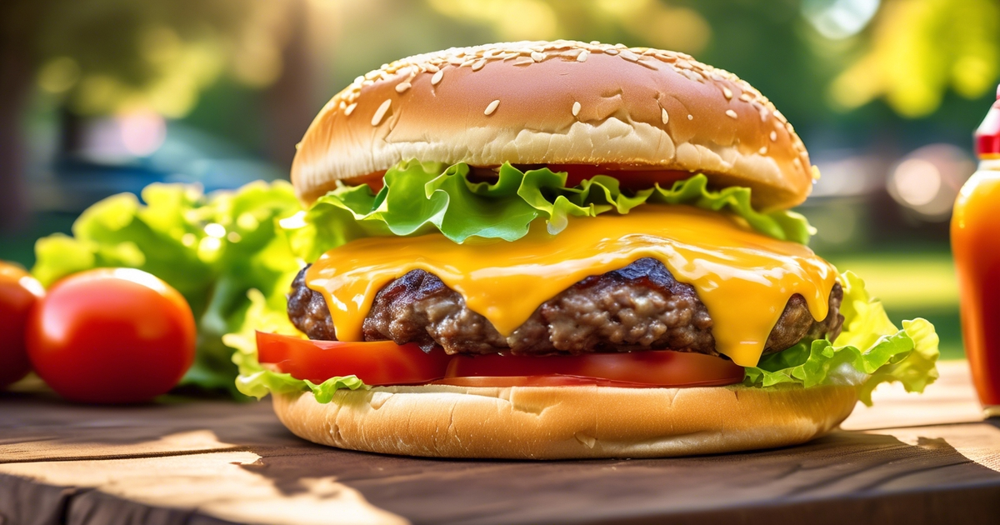

Hamburguer

Classic Smash Burger
Crispy-edged smashed patties with melty cheese.
Ingredients
- 1 pounds ground beef (80/20)
- 1 teaspoons salt
- 0.5 teaspoons black pepper
- 4 American cheese slices
- 4 burger buns
- 1 tablespoons butter
- 4 lettuce leaves
- 4 tomato slices
- 4 tablespoons ketchup/mustard/mayo
Steps
- Portion beef: Divide 1 pounds ground beef (80/20) into 4 loose balls. Don't overwork.
- Toast buns: Butter buns with 1 tablespoons butter and toast cut-side down in a hot skillet.
- Smash and sear: In a very hot cast-iron skillet, place a ball, smash flat with a spatula, season with 1 teaspoons salt and 0.5 teaspoons black pepper. Sear until edges are brown and crispy.
- Flip and cheese: Flip, top each with one of 4 American cheese slices, cook until melted.
- Assemble: Build on 4 burger buns with 4 lettuce leaves, 4 tomato slices, and 4 tablespoons ketchup/mustard/mayo.
Home